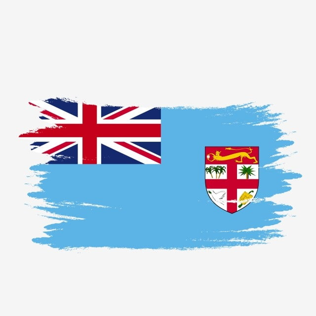
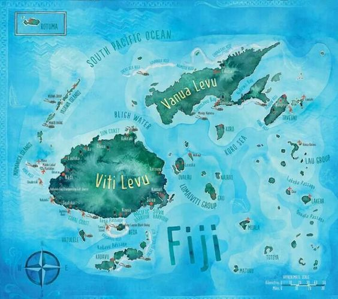

Fiji
Fiji is a country that consists of 333 islands, and 110 of them are inhabited. The two major islands are Viti Levu and Vanua Levu both have 87% of the population of almost 883,000. The capital, Suva on Viti Levu, serves as Fiji's principal port. About three-quarters of Fijians live on Viti Levu's coasts. 57 percent of Fiji's population is native Melanesian or Melanesia/Polynesian mix, while 37 percent is descended from indentured Indians brought to the islands in the late 19th century by the British to work the sugar cane plantations.
Fiji is a multi-race country that has a lot of slangs. 'vinaka' (pronounced veenaka) is how you say thank you or good. Yes is 'io' (ee or) and no is 'seg a' (senga) the letter g is pronounced 'ng', so Sigatoka is pronounced Singatoka. The letter d is also pronounced with an n before it, so Nadi is spoken as Nandi. You pronounce an m before the letter b, so Toberau is Tomberau, and a c is pronounced 'th' so Mamanuca Islands is pronounced Mamanutha Islands. In the southern Pacific we find the beautiful islands representing Fiji. Officially, it is today called the Republic of Fiji, but Fiji is still the most widely used in the vernacular. Here you will find over 300 islands, where about 110 of these are inhabited, all of which are surrounded by beautiful crystal clear water that invites you to both swimming and diving and snorkelling. The long white beaches are perfect for sunbathing and if you want shade you can lie under one of the exotic palm trees that contribute to the feeling of a paradise island. Fiji travel to people who want to get away from everyday stress and the need to just enjoy the tranquility and the scenic environment. The idyllic islands are also a place for many couples as many choose to travel here to spend their honeymoon or to have their dream wedding. It is the place to fall in love and bring people you love to.